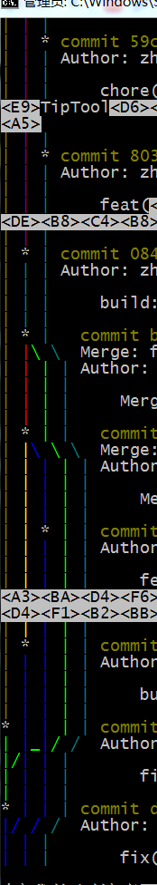
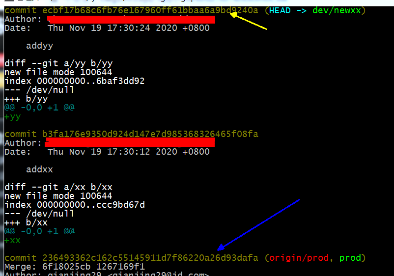
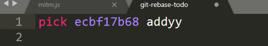

一般项目都有prod（开发分支），master（线上主分支），release（预发布分支）构成。
以往我的开发流程：
git checkout prod
git checkout -b dev/newxx
在
dev/newxx上开发功能每天做完一些commit一次到
dev/newxx上，commit日志随便打，反正没人看终于做完了，把
dev/newxx合并到release分支，然后提测git checkout release
git merge dev/newxx
提测
测试完成后，合并到master准备上线
git checkout prod
git merge dev/newxx
上线
这样做流程上没问题，但如果翻master分支上的git记录就会发现比较混乱。
把记录打印出来：
git log --graph --pretty=oneline --abbrev-commit --format=short
看看左边这五颜六色的线条，可见主分支的流程已经乱的不可思议了。其他分支无所谓，但主分支的提交记录就应该是一条直线，每一个需求就是这个直线上的一个点，这样如果真的发生线上问题需要排查或者回滚，定位记录也会简单很多。
不管开发的时候如何把控，实际上都不可能做到绝对没有merge的情况，也不大可能一个需求就产生一次commit，所以正确的合并到主分支的方式应该在merge之前，把自己开发分支上的提交记录都使用rebase合并成一条。
具体操作如下：
当前在自己的开发分支
dev/newxxgit log，查看自己本需求最早的一条提交记录的commitid，例如此处蓝色箭头所指记录是从prod切分支出来的记录开头，黄色箭头所指是本次开发所提交的最后一条记录

git rebase -i b3fa176e9350d924d147e7d985368326465f08fa
此时把头上
pick改成s，然后保存退出编辑器
保存后rebase命令就会开始工作，如果中途遇到冲突则按照提示把冲突修改，然后依次运行
git add .,git rebase --continue，最后rebase命令会要求输入合并后的commit信息，这个信息一般写需求相关的就可以了此时这两条记录已合并为一条
切换到prod分支，把这个分支合并上去就可以了，
--no-ff参数表示不需要增加额外的merge提交记录，默认会在合并之后多一条commit，内容是merge xx into prod这样的git merge dev/newxx-1 --no-ff
相关文档
暂无
随便看看